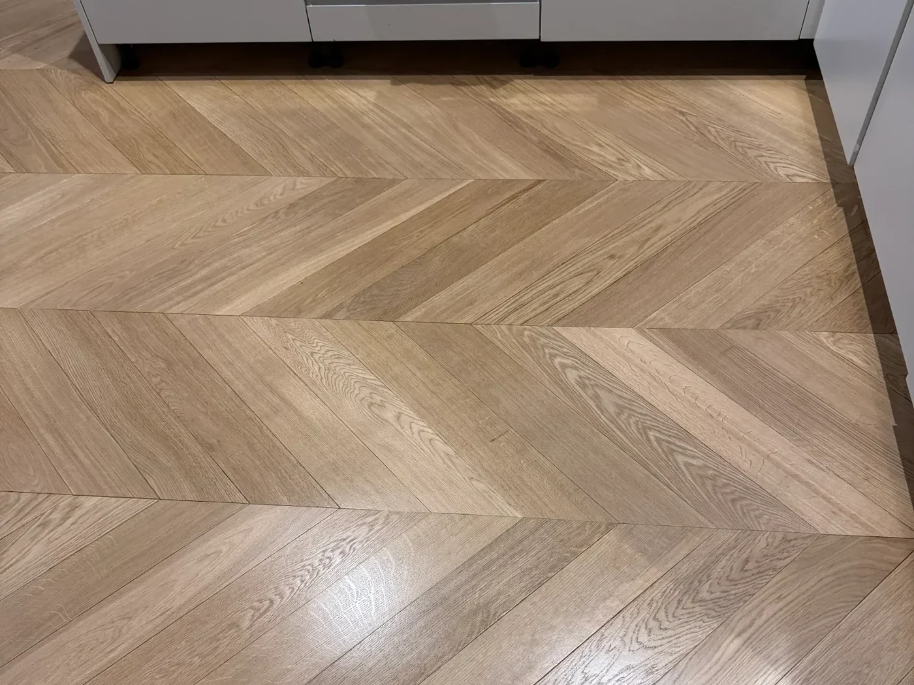
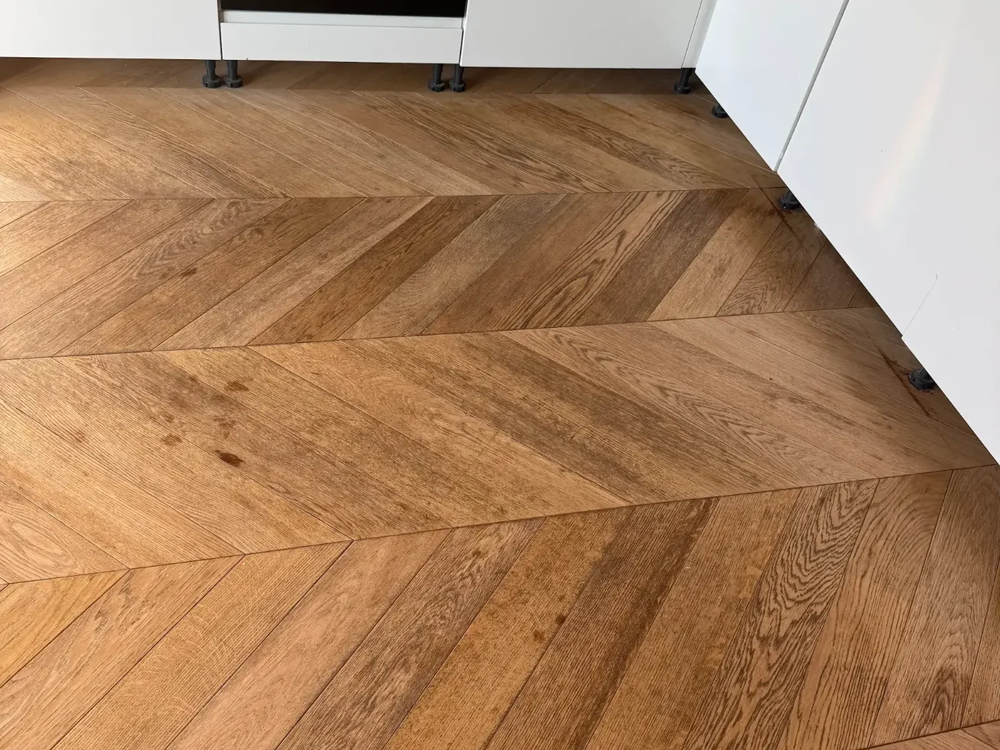

Szlif bezpyłowy, uzupełnienie szczelin masą z pyłu tego samego drewna, trzy warstwy lakieru premium 2K. Po podłodze można chodzić następnego dnia, bez skarpet.
Prawdziwa para zdjęć z realizacji SMARTPARKIET: ta sama kuchnia, ten sam kadr, jodełka francuska z dębu. Zdjęcia bez obróbki, różnicę robi sam szlif i lakier.


Po akceptacji arkusza klient dostaje link. Widzi, kto przyjedzie, co dzieje się dziś w jego mieszkaniu i zdjęcia z etapów, o które poprosi. Nie musi dzwonić z pytaniem „i jak tam?”. Na prośbę klienta ekipa wysyła zdjęcia z telefonu, a właściciel widzi cztery oddziały w akcji na jednym ekranie.
Przykładowe zlecenie. Na gotowej stronie każdy klient ma własny link, ważny do odbioru.